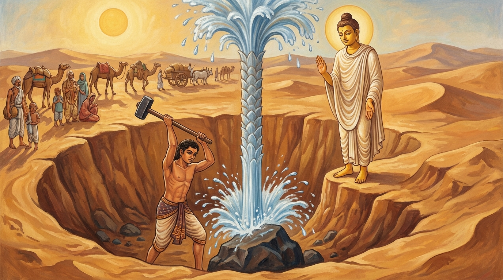

2. වණ්ණුපථ ජාතකය (2)
“අකිලාසුනො” යන මේ ධර්ම දේශනාව භාග්යවතුන් වහන්සේ සැවැත් නුවර වැඩවසන සමයෙහි වදාළ සේක. කවරෙකු අරබයා ද යත්? වීර්යය අත්හළ එක්තරා භික්ෂුවක් අරබයා ය. බුදුරජාණන් වහන්සේ සැවැත් නුවර වැඩවසන කල්හි, සැවැත් නුවර එක් කුල පුත්රයෙක් ජේතවනයට ගොස් බුදුරජාණන් වහන්සේගෙන් දහම් අසා, පැහැදුණු සිත් ඇත්තේ, කාමයන්හි ආදීනව දැක පැවිදි විය. ඔහු උපසම්පදාව ලබා පස් වසරක් ගත වූ පසු, මාතෘකා දෙකම ඉගෙන, විදර්ශනා ක්රමය ද ප්රගුණ කොට, බුදුරජාණන් වහන්සේ වෙතින් තමාගේ සිතට ගැළපෙන කමටහනක් ගෙන එක් ආරණ්යයකට පිවිසියේ ය. එහි වස් එළඹ තෙමසක් මුළුල්ලේ වීර්යය කළ ද, ආලෝක මාත්රයක් හෝ නිමිති මාත්රයක් හෝ උපදවා ගැනීමට ඔහුට නොහැකි විය.
ඉක්බිති ඔහුට මෙබඳු සිතක් පහළ විය: “ශාස්තෘන් වහන්සේ විසින් පුද්ගලයන් සතර දෙනෙකු ගැන දේශනා කරන ලදී. ඒ අතුරින් මා ‘පදපරම’ (ධර්මය කොතෙක් ඇසුවත් මේ ආත්මයේදී මගඵල නොලබන) පුද්ගලයෙකු විය යුතු ය. මේ ආත්මභාවයේදී මට මාර්ගයක් හෝ ඵලයක් නැතැයි සිතමි. එසේ නම් ආරණ්යයේ වාසය කිරීමෙන් ඇති ඵලය කිම? ශාස්තෘන් වහන්සේ වෙත ගොස් රූප ශෝභාවෙන් අග තැන්පත් බුද්ධ ශරීරය දෙස බලමින්, මිහිරි වූ ධර්ම දේශනා අසමින් වාසය කරමි” යි සිතා නැවත ජේතවනයට ම පැමිණියේ ය. එවිට ඔහුගේ හිතවත් මිත්ර භික්ෂූහු, “ඇවැත්නි, ඔබ ශාස්තෘන් වහන්සේ වෙතින් කමටහන් ගෙන ‘ශ්රමණ ධර්මය පුරන්නෙමි’ යි කියා ගියේ ය. දැන් නැවත පැමිණ පිරිස් සමඟ ඇලෙමින් හැසිරෙන්නෙහි ය. කුමක් ද? ඔබගේ පැවිදි කෘත්යය මුදුන් පත් වූයේ ද? නැවත උපතක් නැත්තෙක් වූයේ දැ?” යි විමසූහ. “ඇවැත්නි, මම මාර්ගයක් හෝ ඵලයක් නොලැබ, ‘මා අභව්ය පුද්ගලයෙකැ’යි සිතා වීර්යය අත්හැර පැමිණියෙමි” යි ඔහු පැවසී ය. “ඇවැත්නි, දැඩි වීර්යය ඇති බුදුරජාණන් වහන්සේගේ ශාසනයේ පැවිදි වී, වීර්යය අත්හැරීමෙන් ඔබ විසින් නුසුදුස්සක් කරන ලදී. එන්න, තථාගතයන් වහන්සේට ඔබව දක්වන්නෙමු” යි කියා, ඔවුහු ඒ භික්ෂුව කැඳවාගෙන බුදුරජාණන් වහන්සේ වෙත ගියහ.
ශාස්තෘන් වහන්සේ ඔහු දැක, “මහණෙනි, ඔබලා මේ භික්ෂුව අකමැත්තෙන් මෙන් කැඳවාගෙන ආවේ ය. මොහු විසින් කුමක් කරන ලද ද?” යි විමසූ සේක. “ස්වාමීනි, මේ භික්ෂුව මෙබඳු වූ නිර්වාණගාමී ශාසනයක පැවිදි ව, ශ්රමණ ධර්මය පුරමින් සිට වීර්යය අත්හැර පැමිණියේ ය” යි ඔවුහු පැවසූහ. එවිට ශාස්තෘන් වහන්සේ, “මහණ, ඔබ වීර්යය අත්හැර දැමූ බව සැබෑ ද?” යි ඔහුගෙන් ඇසූ සේක. “එසේ ය, භාග්යවතුන් වහන්ස” යි හෙතෙම පිළිතුරු දුන්නේ ය. “මහණ, මෙබඳු වූ මාගේ ශාසනයේ පැවිදි ව, ‘අල්පේච්ඡ ය’, ‘සන්තුෂ්ටිමත් ය’, ‘හුදෙකලා වූවෙක් ය’, ‘ආරද්ධ වීර්යය ඇත්තෙක් ය’ කියා තමා හඳුන්වා නොදී, ‘වීර්යය අත්හළ භික්ෂුවක්’ යැයි හඳුන්වා දෙන්නෙහි ද? ඔබ පෙර වීර්යයවන්තයෙක් වී ය. එදා ඔබ එකලාව කළ වීර්යය නිසා මරු කතරක දී කරත්ත පන්සියයක සිටි මිනිස්සු ද ගවයෝ ද පැන් ලැබ සුවපත් වූහ. දැන් කුමක් නිසා වීර්යය අත්හරින්නෙහි ද?” යි වදාළ සේක. ඒ භික්ෂුව මේ වචන මාත්රයෙන් ම මහත් වූ චිත්ත ධෛර්යයක් ලැබුවේ ය.
ඒ කතාව අසා භික්ෂූහු භාග්යවතුන් වහන්සේගෙන් මෙසේ ඉල්ලා සිටියහ. “ස්වාමීනි, දැන් මේ භික්ෂුව වීර්යය අත්හළ බව අපට පැහැදිලි ය. නමුත් පෙර මොහුගේ එකම වීර්යය නිසා මරු කතරක දී මිනිසුන් සහ ගවයන් පැන් ලබා සුවපත් වූ බව අපට රහසකි. එය ඔබ වහන්සේගේ සර්වඥතා ඥානයට ම ප්රකට ය. අපට ද ඒ කාරණය වදාරන සේක්වා!” “එසේ නම් මහණෙනි, අසව්” යැයි පැවසූ භාග්යවතුන් වහන්සේ, ඒ භික්ෂූන්ගේ සිහිය උපදවා භවාන්තරයෙන් වැසී තිබුණු ඒ කාරණය ප්රකට කළ සේක.
අතීතයේ කාසි රට බරණැස් නුවර බ්රහ්මදත්ත රජු රාජ්යය කරන කල්හි, බෝසතාණෝ සාත්තුනායක කුලයක පිළිසිඳගෙන, වියපත් ව, කරත්ත පන්සියයක් රැගෙන වෙළඳාම් කරමින් හැසිරුණාහ. දිනක් ඔහු සැට යොදුනක් වූ මරු කතරකට (වැලි කාන්තාරයකට) පිළිපන්නේ ය. ඒ කාන්තාරයේ ඉතා සියුම් වූ වැලි මිටින් ගත් කල්හි අතෙහි නොරඳයි. ඉර උදාවේ පටන් ගිනි අඟුරු ගොඩක් මෙන් උණුසුම් වෙයි; පය තබා යා නොහැකි ය. එබැවින් එය තරණය කරන්නෝ දර, දිය, තල, සහල් ආදිය කරත්තවල පටවාගෙන රාත්රියේ ම ගමන් කරති. අරුණෝදයත් සමඟ කරත්ත රවුමට සිටුවා, ඊට ඉහළින් මණ්ඩපයක් තනා, වේලාසනින් ම ආහාර කෘත්යය නිමවා, (කරත්ත) සෙවනේ වාඩි වී දවල් කාලය ගත කරති. හිරු බැස ගිය පසු රාත්රී ආහාරය අනුභව කොට, පොළොව සිසිල් වූ කල්හි කරත්ත යොදාගෙන ගමන් කරති. මේ ගමන මුහුදු ගමනක් හා සමාන ය. ඒ නිසා ‘ගොඩබිම් නියමුවෙකු’ (තල නියාමක) සිටිය යුතු ම ය. ඔහු තරු බලමින් සාත්තුව එතෙර කරවයි.
ඒ සාත්තුනායකයා ද එකල මේ ආකාරයෙන් ම ඒ වැලි කාන්තාරය තරණය කරමින් සිටියේ ය. පනස් නව යොදුනක් ගොස්, “දැන් එක රැයකින් ම මරු කතරින් එතෙර විය හැකි ය” යි සිතා, රාත්රී ආහාරය අනුභව කොට, සියලු දර සහ දිය අවසන් කරවා කරත්ත යා කරගෙන පිටත් විය. නියමුවා පළමු කරත්තයේ ඇඳක් අතුරුවාගෙන අහසේ තරු බලමින්, “මෙලෙසින් පදවනු, මෙලෙසින් පදවනු” යි කියමින් වැතිර සිටියේ ය. දීර්ඝ කාලයක් නොනිදා සිටි හෙයින් විඩාවට පත් ඔහුට නින්ද ගියේ ය. ගවයෝ ආපසු හැරී තමන් ආ පාරේ ම ගමන් කළ බව (කිසිවෙක්) නොදත්හ. ගවයෝ මුළු රැය පුරා ආපසු ගමන් කළහ. නියමුවා අරුණෝදය වන විට අවදි වී, නැකැත් තරු බලා, “කරත්ත හරවව්! කරත්ත හරවව්!” යි කෑගැසී ය. කරත්ත හරවා පේළියට සකස් කරන විට ම අරුණ නැගුණි. මිනිස්සු, “මේ අප ඊයේ නවාතැන් ගත් කඳවුර ම ය. අපගේ දර සහ ජලය ද අවසන් විය. දැන් අප විනාශ වූවා වැනි ය” යි කියමින්, කරත්ත මුදා, රවුමට තබා, ඉහළින් මණ්ඩපයක් තනා, තම තමන්ගේ කරත්ත යටට වී ශෝක කරමින් නින්දට වැටුණහ.
බෝසතාණෝ, “මා වීර්යය අත්හැරියහොත් සියල්ලෝ ම විනාශ වන්නාහ” යි සිතා, අලුයම සිසිල් වේලාවේ ඇවිදින්නේ, එක් ‘දැබර’ තණ පඳුරක් දැක, “මේ තණකොළ පොළොව යට ඇති දිය සීරාව නිසා වැඩුණු ඒවා විය යුතු ය” යි සිතා, උදැල්ලක් ගෙන්වාගෙන ඒ ප්රදේශය කණින්ට නියම කළේ ය. ඔවුහු රියන් හැටක් පමණ කැණූහ. එපමණ ගැඹුරට කණින විට උදැල්ල යට තිබූ ගලක හැපිණි. ගලෙහි හැපුණු පමණින් ම සියල්ලෝ ම වීර්යය අත්හළහ. නමුත් බෝසතාණෝ, “මේ ගලට යටින් ජලය තිබිය යුතු ය” යි සිතා, වළට බැස ගල මත සිට, නැමී කන තබා සවන් දුන්නේ යටින් ගලන ජලයේ ශබ්දය ඇසුවේ ය. වළෙන් ගොඩට විත් තමාගේ කුඩා උපස්ථායකයා අමතා, “දරුව, ඔබ වීර්යය අත්හැරියහොත් අප සියල්ලෝ ම විනාශ වන්නෙමු. ඔබ වීර්යය අත්නොහැර, මේ යකඩ කුළුගෙඩිය ගෙන වළට බැස ඒ ගලට පහරක් දෙව” යි පැවසී ය. ඔහු බෝසතුන්ගේ වචනය පිළිගෙන, අන් සියල්ලන් උත්සාහය අත්හැර සිටියදීත්, තමා වීර්යය අත්නොහැර වළට බැස ගලට පහර දුන්නේ ය. ගල මැදින් බිඳී පහළට වැටී දිය පහර අවහිර කර සිටියේ ය. (ගල ඉවත් වීමත් සමඟ) තල් කඳක් පමණ ජල කඳක් ඉහළට පැන නැගුණි. සියල්ලෝ ම පැන් බී, ස්නානය කළහ. වැඩිපුර තිබූ කරත්ත අක්ෂ (කැඩීගිය දැව දඬු) ආදිය පළා, කැඳ සහ බත් පිස අනුභව කොට, ගවයන්ට ද කවා, හිරු බැස යන විට දිය වළ ළඟ කොඩියක් බැඳ, තමන් කැමති ස්ථානයට ගියහ. එහිදී ඔවුහු භාණ්ඩ විකුණා දෙගුණ තෙගුණ සිව්ගුණ ලාභ ලබා තම වාසස්ථානවලට ගියහ. ඔවුහු දිවි ඇති තාක් සිට කම් වූ පරිදි මිය ගියහ. බෝසතාණෝ ද දානාදී පින්කම් කොට මියගොස් කම් වූ පරිදි උපන්හ.

සම්මා සම්බුදුරජාණන් වහන්සේ මේ ධර්ම දේශනාව වදාරා, අභිසම්බුද්ධ වූ සේක් ම මේ ගාථාව දේශනා කළ සේක:
“නොපසුබස්නා වීර්යය ඇත්තෝ වැලි කතර හාරමින් එහි ගොඩබිම ම ජලය ලැබූහ. එසේම කායික මානසික වීර්යයෙන් හා ඥාන බලයෙන් යුත්, විඩාවට පත් නොවන මුනිවරයා (යෝගියා) හදවතේ ශාන්තිය (නිවන) ලබන්නේ ය.”
එහි “අකිලාසුනො” යනු කුසීත නොවූවෝ හෙවත් ඇරඹූ වීර්යය ඇත්තෝ ය. “වණ්ණුපථෙ” යන්නෙහි ‘වණ්ණු’ යනු වැලි ය; වැලි සහිත මාර්ගයෙහි යනු එහි අර්ථයි. “ඛණන්තා” යනු පොළොව හාරන්නාහු ය. “උදඞ්ගණෙ” යන මෙහි ‘උද’ යනු නිපාතයකි; ‘අඞ්ගණෙ’ යනු මිනිසුන් සැරිසරන, වළවල් නැති භූමි භාගය හෙවත් ගොඩබිම යන අර්ථයි. “තත්ථ” යනු ඒ වැලි කතරෙහි ය. “පපං අවින්දුං” යනු ජලය ලැබූහ යන්නයි. ජලය වනාහි පානය කරනු ලබන බැවින් ‘පපා’ යැයි කියනු ලැබේ. ගලා යන ජලය හෙවත් මහා ජල කඳක් යනු අර්ථයි.
“එවං” යනු උපමා සැසඳීමයි. “මුනී” යනු ‘මොන’ හෙවත් ඥානයයි. නැතහොත් කාය මෞනය (කාය සංවරය) ආදියෙන් එකකින් හෝ යුක්ත පුද්ගලයා ‘මුනි’ යැයි කියනු ලැබේ. ඒ මුනිවරයා විවිධ වේ:
- අගාරිය මුනි (මගඵල ලැබූ ගිහියා)
- අනගාරිය මුනි (එබඳු වූ පැවිද්දා)
- සේඛ මුනි (හික්මිය යුතු සත් දෙනා)
- අසේඛ මුනි (රහතන් වහන්සේ)
- පච්චේක මුනි (පසේ බුදුවරයා)
- මුනි මුනි (සම්මා සම්බුදුරජාණන් වහන්සේ)
මේ කරුණෙහි දී, මොවුන් සියලු දෙනා ම එකට කැටි කොට ‘මෞනේය්ය’ නම් වූ නුවණින් යුක්ත බැවින් “මුනී” යැයි දත යුතු ය. “වීරියබලූපපන්නො” යනු වීර්යයෙන් ද, කාය බලයෙන් ද, ඥාන බලයෙන් ද යුක්ත වූයේ ය. “අකිලාසු” යනු කුසීත බව නැත්තේ හෙවත්,
“මාගේ සිරුරෙහි ඒකාන්තයෙන් සම, නහර සහ ඇට පමණක් ඉතිරි වේවා! ශරීරයේ මස් හා ලේ සම්පූර්ණයෙන් වියළී යාවා!” (යනුවෙන් අධිෂ්ඨාන කොට),
මෙසේ කියන ලද චතුරංග වීර්යයෙන් (අංග හතරකින් යුත් වීර්යයෙන්) යුක්ත බැවින් අලස බව නැත්තා ය. “වින්දෙ හදයස්ස සන්තිං” යනු සිතෙහි ද හදවතෙහි ද සිසිල් බව ඇති කරන හෙයින් ‘ශාන්ති’ නම් වූ, ධ්යාන, විපස්සනා, අභිඥා සහ අරහත් මාර්ග ඥානය යැයි කියන ලද උසස් ආර්ය ධර්මය ලබයි; අවබෝධ කරගනී යන අර්ථයි. භාග්යවතුන් වහන්සේ විසින් ද,
“මහණෙනි, කුසීත තැනැත්තා පවිටු අකුසල ධර්මයන්ගෙන් ගැවසී ගත් බැවින් දුකසේ වාසය කරයි; තමාගේ මහත් වූ අර්ථය (යහපත) පිරිහෙළයි. මහණෙනි, පටන්ගත් වීර්යය ඇත්තා පවිටු අකුසල ධර්මයන්ගෙන් වෙන්ව සැපසේ වාසය කරයි; තමාගේ මහත් වූ අර්ථය සම්පූර්ණ කරගනී. මහණෙනි, හීන වූ වීර්යයෙන් උතුම් දෙය (නිවන) ලැබීමක් නොවේ” (සංයුක්ත නිකාය 2.22) යනාදී වශයෙන්,
මෙසේ නොයෙක් සූත්රවල කුසීතයාගේ දුක සේ විසීමත්, පටන්ගත් වීර්යය ඇත්තාගේ සැප විහරණයත් වර්ණනා කරන ලදී. මෙහි දී ද, ඇරඹූ වීර්යය ඇති, තණ්හා දෘෂ්ටි වශයෙන් අල්වා ගැනීමක් නැති, විදසුන් වඩන්නා වූ යෝගාවචරයා විසින් වීර්ය බලයෙන් ලබාගත යුතු ඒ සැප විහරණය පෙන්වා දෙමින්, “එවං මුනී වීරියබලූපපන්නො, අකිලාසු වින්දෙ හදයස්ස සන්තිං” (මෙසේ වීර්යය බලයෙන් යුත්, නොපසුබස්නා මුනිවරයා හදවතේ ශාන්තිය ලබයි) යනුවෙන් වදාළ සේක. මෙහි අදහස මෙයයි: “යම් සේ ඒ වෙළෙන්දෝ අලස නොවී වැලි කතර හාරමින් ජලය ලැබුවාහු ද, එසේම මේ ශාසනයෙහි ද අලස නොවී වෑයම් කරන නුවණැති භික්ෂුව මේ ධ්යානාදී වශයෙන් බෙදා දැක්වූ හෘදය ශාන්තිය ලබයි.” ඉක්බිති බුදුරජාණන් වහන්සේ, “මහණ, එදා ඔබ දිය බිඳක් සඳහා වීර්යය කොට, දැන් මෙබඳු මාර්ග ඵල දෙන නෛර්යාණික (සසරින් එතෙර කරවන) ශාසනයෙහි කුමක් නිසා වීර්යය අත්හරින්නෙහි ද?” යි අවවාද කොට, මෙම ධර්ම දේශනාව දක්වා චතුරාර්ය සත්යය ප්රකාශ කළ සේක. සත්ය දේශනාව අවසානයේ වීර්යය අත්හළ භික්ෂුව අග්ර ඵලය වූ අරහත් භාවයෙහි පිහිටියේ ය.
ශාස්තෘන් වහන්සේ කතා වස්තූන් දෙක ගළපා, අනුසන්ධි යොදා, ජාතකය සමාප්ත කරමින් මෙසේ වදාළ සේක: “එසමයෙහි වීර්යය අත්නොහැර, පොළොව හාරා ගල බිඳ, මහජනයාට ජලය ලබා දුන් කුඩා උපස්ථායකයා වූයේ දැන් මේ වීර්යය අත්හළ භික්ෂුව ය. ඉතිරි පිරිස දැන් බුදු පිරිස වූහ. සාත්තුනායකයා වනාහි මම ම වීමි.”
වණ්ණුපථ ජාතක වර්ණනාව යි (දෙවැන්න යි).